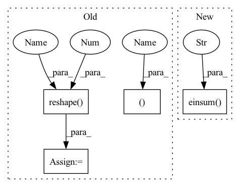

Pattern ID :1169
Before Change
scores, indices = dots.topk(k=self.topk, dim=-1)
scores, indices = map(lambda x: x.chunk(2, dim=2), (scores, indices))
shape = (b, h, t, self.topk ** 2 )
all_scores = (
scores[0][..., :, None] +
scores[1][..., None, :]
).reshape(*shape)
all_indices = (
indices[0][..., :, None] * self.num_keys +
indices[1][..., None, :]
).reshape(*shape)
final_topk, final_indices = all_scores.topk(self.topk, dim=-1)
value_indices = all_indices.gather(-1, final_indices)
attn = final_topk.softmax(dim=-1)
expanded_values = values[None, :, None, :, :].expand(b, -1, t, -1, -1)
expanded_indices = expand_dim(value_indices, dim=4, k=d_head, unsqueeze=True)
selected_values = expanded_values.gather(-2, expanded_indices)
out = (attn.unsqueeze(-1) * selected_values).sum(dim=-2)
out = out.transpose(1, 2).reshape( b, t , -1 )
return self.to_out(out)
After Change
queries = queries.chunk(2, dim=-1)
queries = torch.stack(queries).reshape(2, b, t, h, -1)
dots = torch.einsum("pbthd,hnpd->bthpn" , queries, self.keys)
scores, indices = dots.topk(k=self.topk, dim=-1)
scores, indices = map(lambda x: x.chunk(2, dim=2), (scores, indices))
all_topk = self.topk ** 2In pattern: SUPERPATTERN
Frequency: 3
Non-data size: 4
Instances Fragment ID: 4124094
Project Name: lucidrains/product-key-memory
Commit Name: 915dd922ef8e168f7970d5336d0ba79b4f57fe47
Time: 2020-06-06
Author: lucidrains@gmail.com
File Name: product_key_memory/product_key_memory.py
M Class Name: PKM
N Class Name: PKM
M Method Name: forward(2)
N Method Name: forward(2)
M Parent Class: nn.Module
N Parent Class: nn.Module
M File Name: product_key_memory/product_key_memory.py
N File Name: product_key_memory/product_key_memory.py
M Start Line: 36
M End Line: 71
N Start Line: 35
N End Line: 64
Before Change
init.zeros_(self.bias)
def forward(self, x):
batch_size, c_in, T, n_vertex = x.shape
x_first_mul = torch.mm(x.reshape(-1 , c_in) , self.weight).view(n_vertex, -1)
x_second_mul = torch.mm(self.gcnconv_matrix, x_first_mul).view(-1, self.c_out)
if self.bias is not None:
x_gcnconv = x_second_mul + self.bias
After Change
//bs, c_in, ts, n_vertex = x.shape
x = torch.permute(x, (0, 2, 3, 1))
first_mul = torch.einsum("hi,btij->bthj" , self.gso, x)
second_mul = torch.einsum("bthi,ij->bthj", first_mul, self.weight)
if self.bias is not None:
Fragment ID: 4124095
Project Name: hazdzz/stgcn
Commit Name: de050cc05a36453eafe1bf7bac60401c6561e947
Time: 2022-02-07
Author: raphaelpeo@gmail.com
File Name: model/layers.py
M Class Name: GCNConv
N Class Name: GraphConv
M Method Name: forward(2)
N Method Name: forward(2)
M Parent Class: nn.Module
N Parent Class: nn.Module
M File Name: model/layers.py
N File Name: model/layers.py
M Start Line: 232
M End Line: 238
N Start Line: 204
N End Line: 210
Before Change
scores, indices = dots.topk(k=self.topk, dim=-1)
scores, indices = map(lambda x: x.chunk(2, dim=2), (scores, indices))
shape = (b, h, t, self.topk ** 2 )
all_scores = (
scores[0][..., :, None] +
scores[1][..., None, :]
).reshape(*shape)
all_indices = (
indices[0][..., :, None] * self.num_keys +
indices[1][..., None, :]
).reshape(*shape)
final_topk, final_indices = all_scores.topk(self.topk, dim=-1)
value_indices = all_indices.gather(-1, final_indices)
attn = final_topk.softmax(dim=-1)
expanded_values = values[None, :, None, :, :].expand(b, -1, t, -1, -1)
expanded_indices = expand_dim(value_indices, dim=4, k=d_head, unsqueeze=True)
selected_values = expanded_values.gather(-2, expanded_indices)
out = (attn.unsqueeze(-1) * selected_values).sum(dim=-2)
out = out.transpose(1, 2).reshape( b, t, -1 )
return self.to_out(out)
After Change
queries = queries.chunk(2, dim=-1)
queries = torch.stack(queries).reshape(2, b, t, h, -1)
dots = torch.einsum("pbthd,hnpd->bthpn" , queries, self.keys)
scores, indices = dots.topk(k=self.topk, dim=-1)
scores, indices = map(lambda x: x.chunk(2, dim=2), (scores, indices))
all_topk = self.topk ** 2 Fragment ID: 4124093
Project Name: lucidrains/product-key-memory
Commit Name: 915dd922ef8e168f7970d5336d0ba79b4f57fe47
Time: 2020-06-06
Author: lucidrains@gmail.com
File Name: product_key_memory/product_key_memory.py
M Class Name: PKM
N Class Name: PKM
M Method Name: forward(2)
N Method Name: forward(2)
M Parent Class: nn.Module
N Parent Class: nn.Module
M File Name: product_key_memory/product_key_memory.py
N File Name: product_key_memory/product_key_memory.py
M Start Line: 36
M End Line: 71
N Start Line: 35
N End Line: 64
Before Change
init.zeros_(self.bias)
def forward(self, x):
batch_size, c_in, T, n_vertex = x.shape
// Using recurrence relation to reduce time complexity from O(n^2) to O(K|E|),
// where K = Ks - 1
x = x.reshape( n_vertex, -1 )
x_0 = x
x_1 = torch.mm(self.chebconv_matrix, x)
if self.Ks - 1 < 0:
raise ValueError(f"ERROR: the graph convolution kernel size Ks has to be a positive integer, but received {self.Ks}.")
elif self.Ks - 1 == 0:
After Change
x_list = [x_0]
elif self.Ks - 1 == 1:
x_0 = x
x_1 = torch.einsum("hi,btij->bthj" , self.gso, x)
x_list = [x_0, x_1]
elif self.Ks - 1 >= 2:
x_0 = x
Fragment ID: 4124098
Project Name: hazdzz/stgcn
Commit Name: de050cc05a36453eafe1bf7bac60401c6561e947
Time: 2022-02-07
Author: raphaelpeo@gmail.com
File Name: model/layers.py
M Class Name: ChebConv
N Class Name: ChebGraphConv
M Method Name: forward(2)
N Method Name: forward(2)
M Parent Class: nn.Module
N Parent Class: nn.Module
M File Name: model/layers.py
N File Name: model/layers.py
M Start Line: 183
M End Line: 209
N Start Line: 153
N End Line: 180